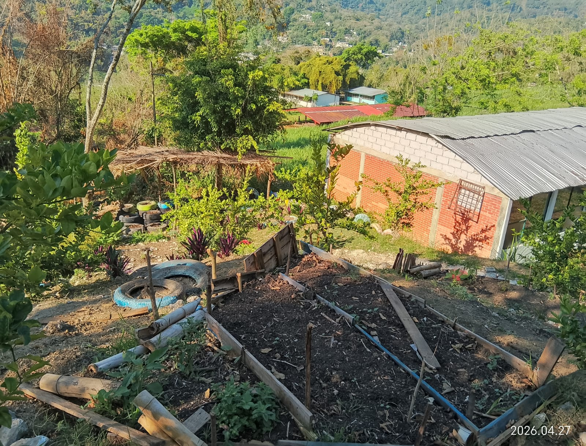
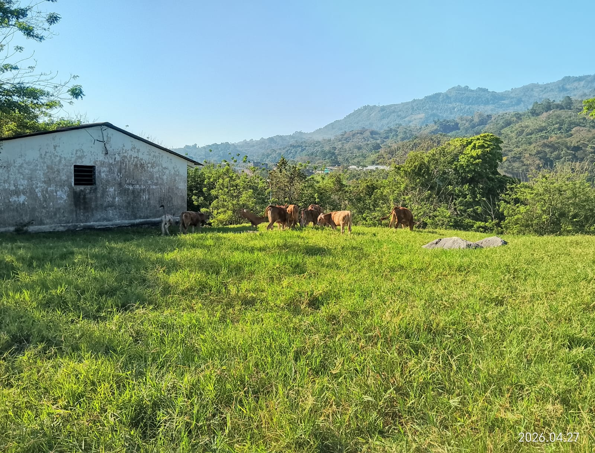
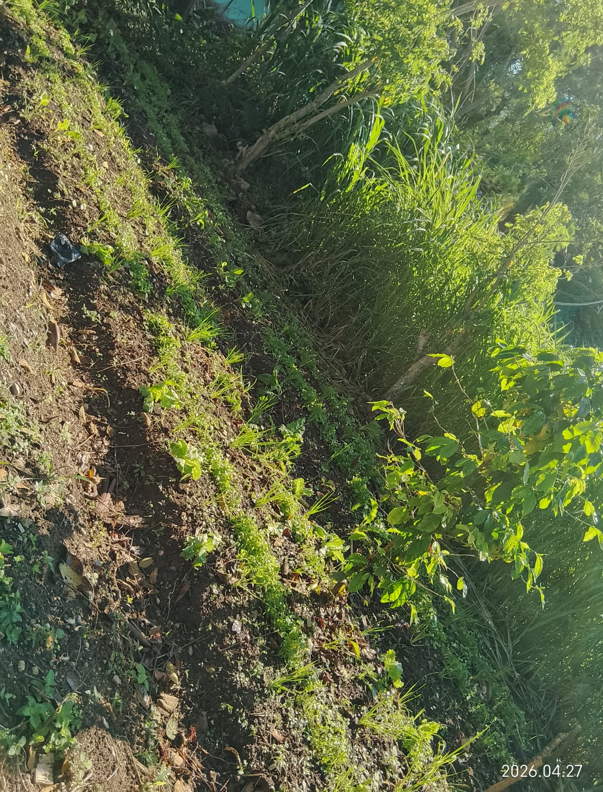

La carrera de Técnico en Agropecuaria forma estudiantes con conocimientos y habilidades para la producción agrícola y pecuaria, contribuyendo al desarrollo sustentable del sector rural. Esta especialidad combina teoría y práctica, permitiendo a los alumnos trabajar directamente en el campo.
El egresado puede trabajar en ranchos, granjas, empresas agrícolas, organizaciones rurales o desarrollar proyectos propios, participando en la producción de alimentos y el aprovechamiento responsable de los recursos naturales.
Volver al inicio